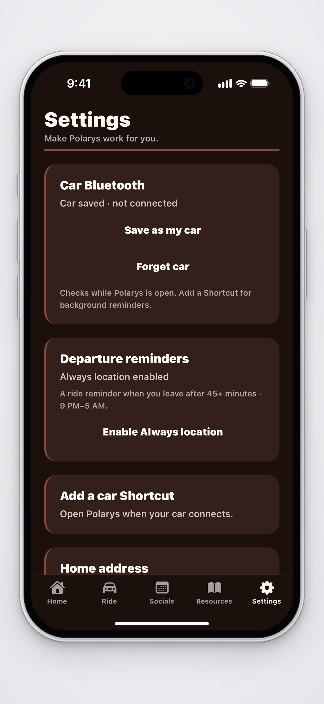
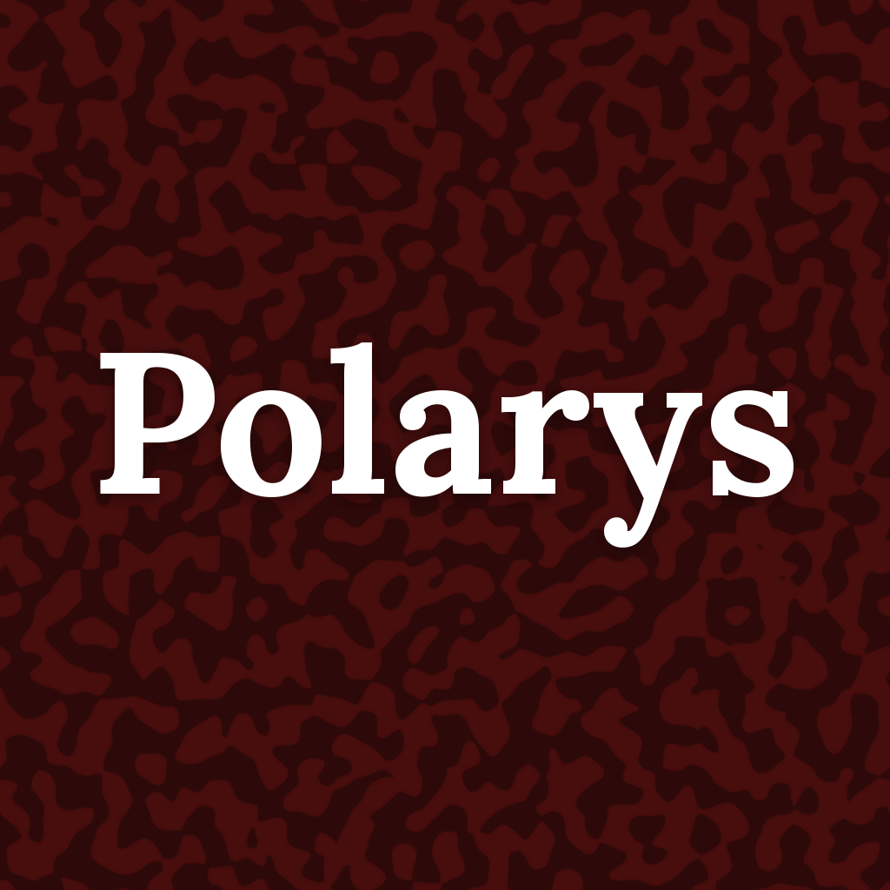
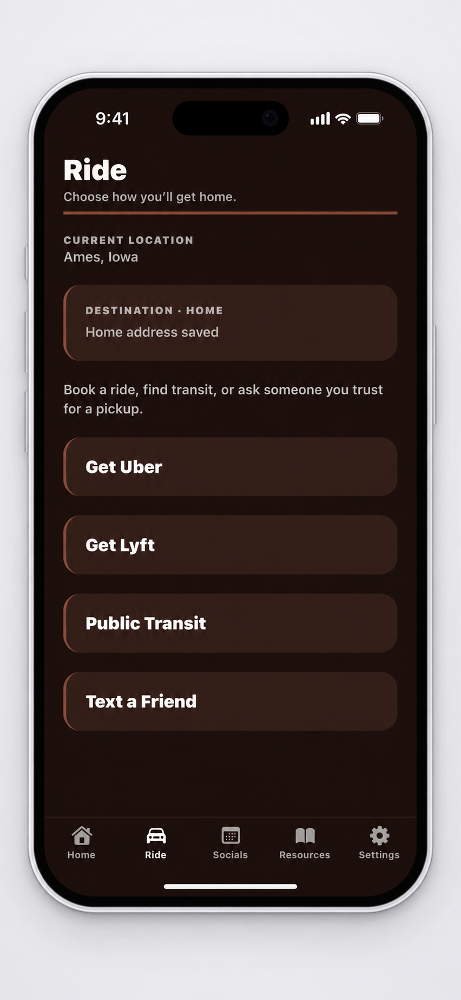
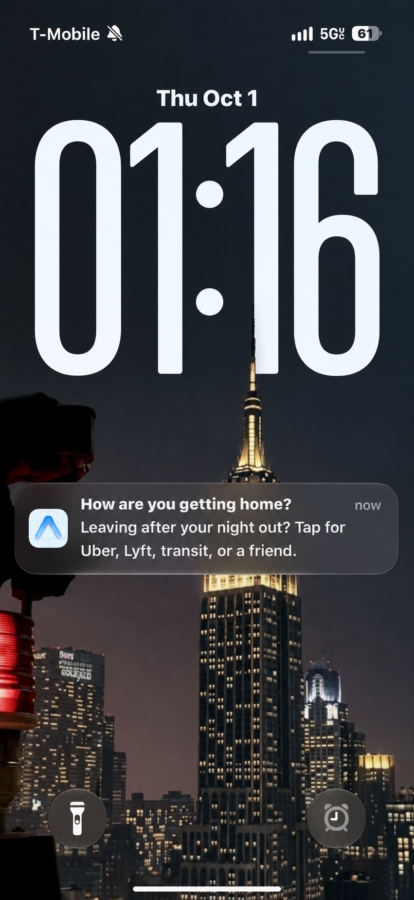
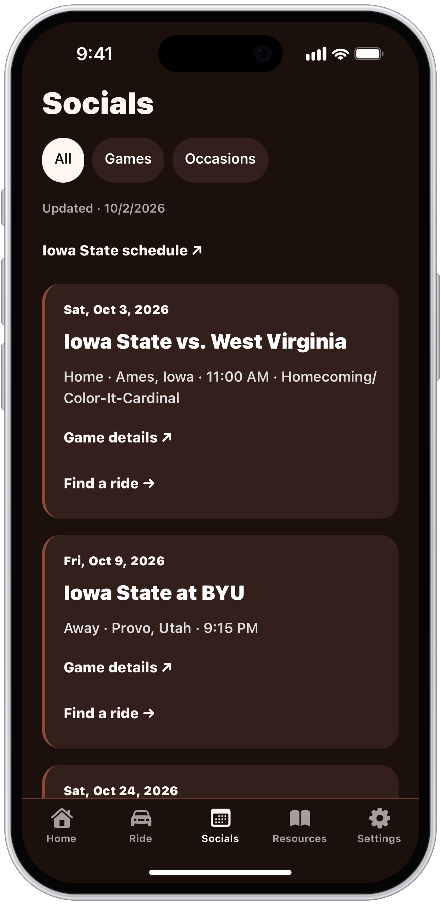

01 / BEFORE YOU GO
Make it your own.
Save a friend’s place under “I do stupid stuff here.” Turn on Always location and notifications.


PolarysBETAMADE FOR THE WAY NIGHTS GO
One more stop? Your friend’s place?
Polarys gives you a nudge to figure out your ride home.
For iPhone. Built by a student in Ames.
Here’s how it works
A little nudge. Your call.
FROM HEADING OUT TO HEADING HOME.
Set it up before you go. Keep your ride options close.
Save a friend’s place under “I do stupid stuff here.” Turn on Always location and notifications.

Spend 45+ minutes at a monitored bar or saved place between 9 PM and 5 AM? Leaving can trigger a ride reminder.

Open Uber or Lyft, look up transit, or text a friend. Pick what works for you.
Reminders depend on location permissions and iOS. They can arrive late or be missed, so make a plan before heading out. Screens shown with personal details removed.
TAKE A LOOK AROUND
No big manual. Just the stuff you might need.

STILL BUILDING. READY TO TRY.
I’m Anay, a student at Iowa State. I built Polarys because getting home should be part of the plan. Try it and tell me what needs work.
Get the iPhone beta